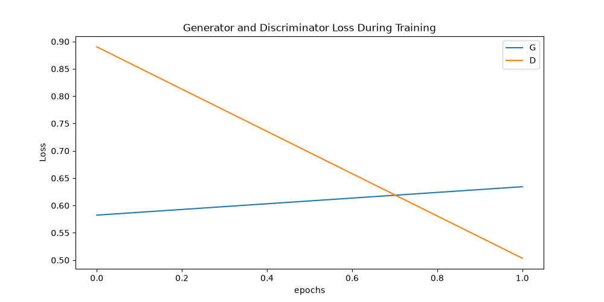
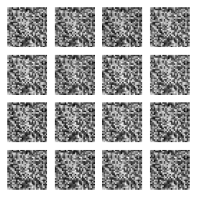

Reference: Goodfellow et al., 2014
This project reproduces the core concepts of Generative Adversarial Networks (GANs). A GAN consists of two neural networks, a generator and a discriminator, which are trained simultaneously through an adversarial process. The generator attempts to create realistic data (in this case, handwritten digits from the MNIST dataset), while the discriminator attempts to distinguish between real data and the generator's fakes.
I implemented a standard Multi-Layer Perceptron (MLP) architecture for both the generator and discriminator using PyTorch. The model was trained on the MNIST dataset.
Below are the training loss curves for both the Generator (G) and Discriminator (D) over the training epochs.

After training, the generator produces the following sample images from random noise:

This lightweight reproduction successfully demonstrates the adversarial training dynamic. Even with a simple architecture and short training time, the generator begins to capture the general structure of handwritten digits.